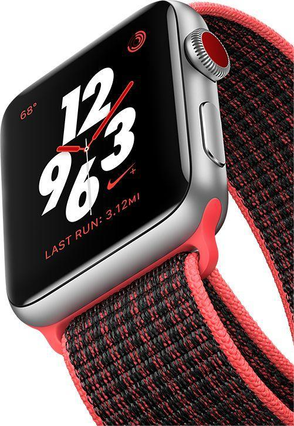

Freedom Calls
Answer a call from your surfboard. Ask siri to send a message.
Stream from your favouritesongs on your run. And do it all while
leaving your phone behind. Introducing Apple Watch Series 3
with cellular. Now you have the freedom to go with just your
watch.


KNOW YOUR RUNS. IN AND OUT.
Train smarter with more in-run stats. Want
to compare your run to your last five? Just
swipe left. Mark splits by selecting pause
or using gestures, like tapping the screen
or double-clicking the side button. And get
a full post-run report, including elevation.
RUN IN GOOD SPIRITS.
Train smarter with more in-run stats. Want
to compare your run to your last five? Just
swipe left. Mark splits by selecting pause
or using gestures, like tapping the screen
or double-clicking the side button. And get
a full post-run report, including elevation.
JUST DO IT. SUNDAY
Run every sunday and see how long you
can keep your streak alive. Fuel your run
with exclusive Nike+Run club playlists on
Apple Music
.